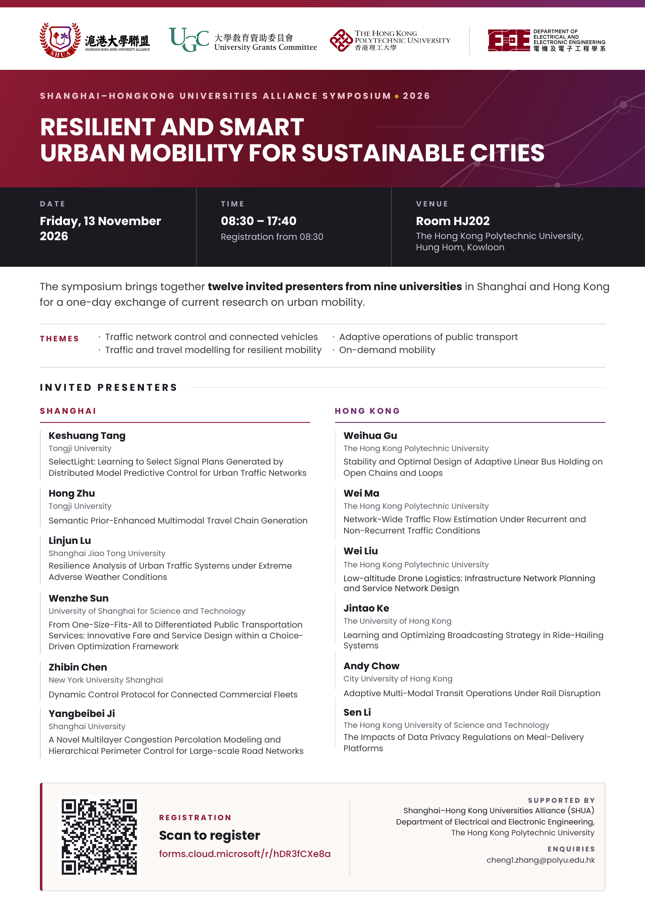

SHUA Symposium 2026
Resilient and Smart Urban Mobility for Sustainable Cities
The Shanghai–Hong Kong Universities Alliance Symposium brings together twelve invited presenters from nine universities in Shanghai and Hong Kong for a one-day exchange on urban mobility research.
Time08:30–17:40 (registration from 08:30)
VenueRoom HJ202, The Hong Kong Polytechnic University, Hung Hom, Kowloon
